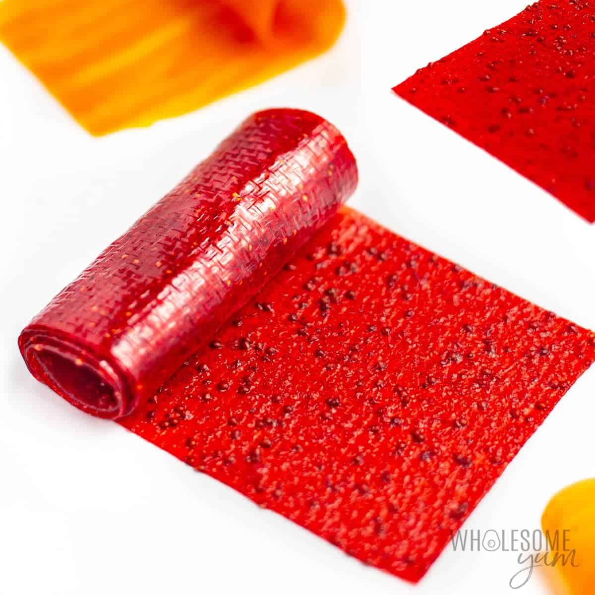

Fruit leather

Description
Does your child's health mean a lot to you? Why not give them a healthy treat that will leave their taste buds happy.
Ingredients
- 1 1/4 pounds fresh fruit
- 1-2 tablespoons Lemon juice
- 3/4 Sugar(Optional)
- Spices(Optional)
Steps
- Pre-heat oven to 200F.
- Puree fruit and suger then add lemon juice to taste.
- Transfer puree to a saucepan on medium-high heat until it starts to simmer. Them turn the heat to a medium low heat until the mixture is very thick.
- Line a 12" by 17" baking sheet with a silicone mat or nonstick foil, using a spatula to spread a thin layer
- Bake for 3 hours - 3 hours and 30 minutes
- Let is cool completely and then remove the mat/foil. Cut to shape and enjoy.